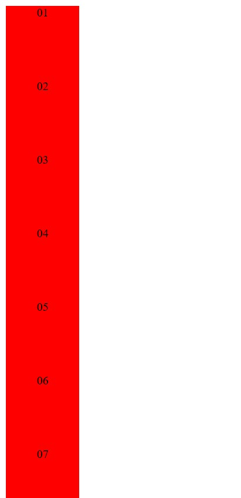
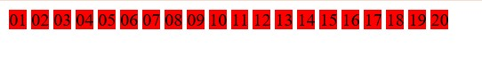
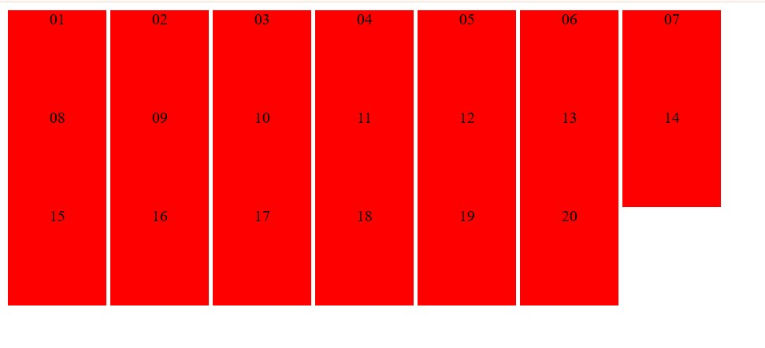

Opdracht 1
- block
Als je de display van .area veranderd naar display: block, dan staan alle getallen onder elkaar in de plaats van naast elkaar.
- inline
Als je de display van .area veranderd naar display: inline, dan staan alle getallen naast elkaar, dus worden ze als woorden weergegeven op de pagina, ook worden de waarden width en height genegeerd.
- inline-block
Bij deze property wordt de tekst ook naast elkaar gezet, maar worden de width en height niet genegeerd.
Opdracht 2
Doordat het naast elkaar gezet wordt, wordt het behandeld als tekst, maar behouden ze tegelijkertijd de eigenschappen van een block.
Opdracht 3
Waarom staat de tekst in de blokken horizontaal gecentreerd?
Omdat er in de CSS een property bestaat met text-align: center.
Ga na dat een property vertical-align:center geen effect heeft. Waarom eigenlijk niet?
Deze property geeft geen effect omdat "center" fout is. Het juiste is vertical-align: middle.
Ga na dat vertical-align:middle er niet voor zorgt dat de tekst verticaal gecentreerd wordt. Wat doet vertical-align dan wel?
Vertical-align zorgt voor de verticale uitlijning van een inline of inline-block element en niet van de tekst.
Wat is de ‘simpele’ manier om een één enkele regel tekst verticaal te centreren?
Als je 1 enkele regel tekst verticaal wilt centreren kan je gebruik maken van line-height. Als de height: 100px is bijvoorbeeld, dan zet je de line-height ook op 100px. Dit zorgt ervoor dat de tekst verticaal gecentreerd wordt.
Welke truc wordt vaak gebruikt om meerdere regels verticaal te centreren?
Een veel gebruikte truc om meerdere regels verticaal te centreren is met display: table-cell. Hierdoor gaat het element zich gedragen als een table-cell, die standaard verticaal gecentreerd wordt.
In 'styles.css' staan twee verschillende CSS regels die de height instellen van een element met class="area tall". Waarom krijgt de regel voor class 'tall' voorrang?
De class tall krijgt voorrang omdat die als laatste wordt uitgevoerd.
Opdracht 4
- Floaty class
- Break class>